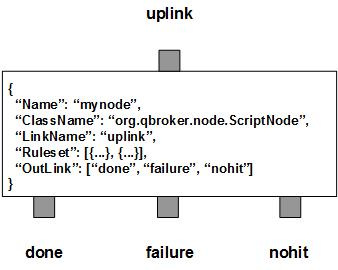

ScriptNode processes JMS messages via JSR223 compliant scripts. There are three outlinks, done for the formatted messages, failure for those messages failed in the process and nohit for those messages not belonging to any predefined rulesets.
ScriptNode contains a number of predefined rulesets. These rulesets categorize messages into non-overlapping groups. Therefore, each rule defines a unique message group. The ruleset also defines the parameters for the script, a template for the path to the scripts, and the TTL. The template is used to build the full path to the the scripts. The script has to be accessible from the filesystem or the supported storage. The original JSON payload should be always stored in the message body. The cache count of scripts for the rule will be stored to RULE_PEND. It will be updated when the session time exceeds the given SessionTimeout. ScriptNode caches every compiled script dynamically. You can set the TTL for each rule so that the script will be expired and removed automatically. For parameters, ScriptNode supports dynamic setting of parameters. It means you can reference properties of the message in your parameters. ScriptNode will retrieve the data from incoming message and set the parameters before the format process.
ScriptEngine must be defined for a rule, ScriptNode will format the JSON data with the script specified in the messages. The script is supposed to have a function of format defined. It takes a Java Map object as the only argument. The Map is the representation of the JSON data. The function is supposed to modify the Map. The updated Map will be converted back to JSON payload of the message. The cache count of engines for the rule will be stored to RULE_PEND. It will be updated when the session time exceeds the given SessionTimeout.
ScriptNode always adds an extra ruleset for the nohit messages. This nohit ruleset is always the first ruleset with the id of 0. On the node level, DisplayMask and StringProperty control the display result of outgoing messages.
You are free to choose any names for the three fixed outlinks. But ScriptNode always assumes the first outlink for done, the second for failure and the last for nohit.
Apart from the common properties, there are three implementation specific properties for ScriptNode.
| Property Name | Data Type | Requirement | Description | Examples |
|---|---|---|---|---|
| SessionTimeout | integer | optional | timeout in sec for a session | 3600 (default: 0) |
The format process is invoked via the pre-defined rulesets. Therefore, the configuration of the rulesets is critical to the operations of ScriptNode. Here are complete properties of rulesets for ScriptNode.
| Property Name | Data Type | Requirement | Description | Examples |
|---|---|---|---|---|
| Name | alphanumeric with no spaces | mandatory | name of the ruleset | event |
| URITemplate | string | optional | template for the full path of the script file | /opt/qbroker/scripts/##ScriptName##.js |
| URISubstitution | string | optional | text substitution for the full path of the template file | s/\.js$/\.rb/ |
| TimeToLive | integer | optional | seconds to cache the scripts | |
| Parameter | map | optional | for setting json parameters from the messages | see example |
| ScriptEngine | string | mandatory for script | the name of the script engine | JavaScript |
| PreferredOutLink | alphanumeric with no spaces | mandatory for bypass only | name of the preferred outlink | bypass |
| JMSPropertyGroup | list | optional | list of pattern groups on properties to select messages | see example |
| XJMSPropertyGroup | list | optional | list of pattern groups on properties to exclude messages | see example |
| PatternGroup | list | optional | list of pattern groups on body to select messages | see example |
| XPatternGroup | list | optional | list of pattern groups on body to exclude messages | see example |
| StringProperty | map | optional | for setting the user properties on the messages | see example |
{
...
"Ruleset": [{
"Name": "bypass",
"PreferredOutLink": "NOHIT",
"JMSPropertyGroup": [{
"JMSType": "^score$"
}]
}],
...
}
where it routes the messages to the outlink of NOHIT.
Here is an example of the script ruleset.
{
...
"Ruleset": [{
"Name": "rb",
"JMSPropertyGroup": [{
"FileName": "\\.rb$"
}],
"URITemplate": "##FileName##",
"ScriptEngine": "ruby"
}],
...
}
where it expects that the message has defined the full path of a ruby script
file in its property of FileName. The node will compile the script from the
path and invokes it on the parsed JSON payload. Upon success, the message
body will contain the new JSON content.
Here is an example of ScriptNode:
{
"Name": "node_script",
"ClassName": "org.qbroker.node.ScriptNode",
"Description": "format messages",
"Operation": "format",
"LinkName": "root",
"Capacity": "6",
"WaitTime": "50",
"DisplayMask": "0",
"Debug": "1",
"SessioTimeout": "600",
"Ruleset": [{
"Name": "html",
"JMSPropertyGroup": [{
"JMSType": "."
}],
"ScriptEngine": "JavaScript",
"URITemplate": "/opt/qbroker/scripts/##JMSType##.js",
"TimeToLive": "3600"
}],
"OutLink": ["done", "failure", "nohit"]
}